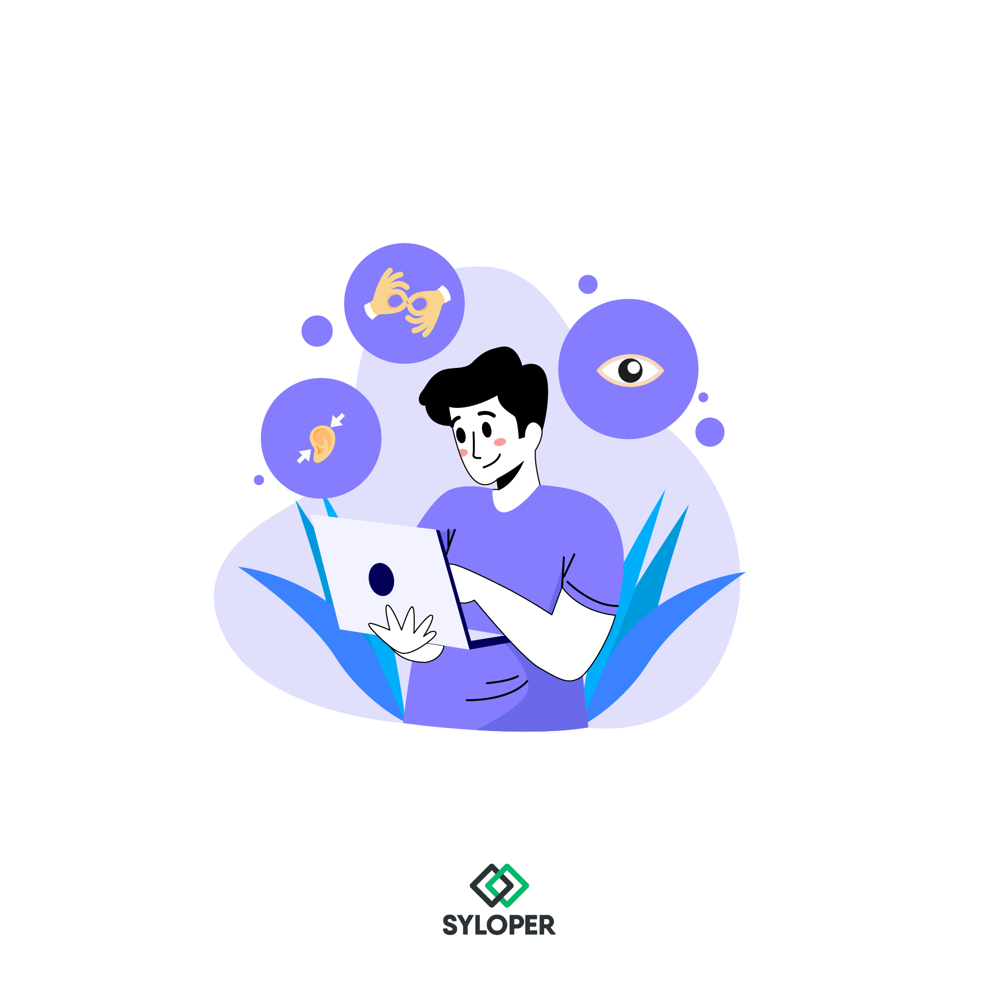

Auditoría Web
Exploramos Sitios Web de pequeñas empresas y las orientamos en buenas prácticas que aseguran la accesibilidad.
Leer másTrabajamos para la inclusión de todos y todas.
Exploramos Sitios Web de pequeñas empresas y las orientamos en buenas prácticas que aseguran la accesibilidad.
Leer másInvestigamos y exponemos casos exitosos de inclusión laboral de personas con discapacidad en Argentina.
Leer másEstudiamos las aplicaciones y sitios webs disponibles para comprobar el contraste de color.
Leer más